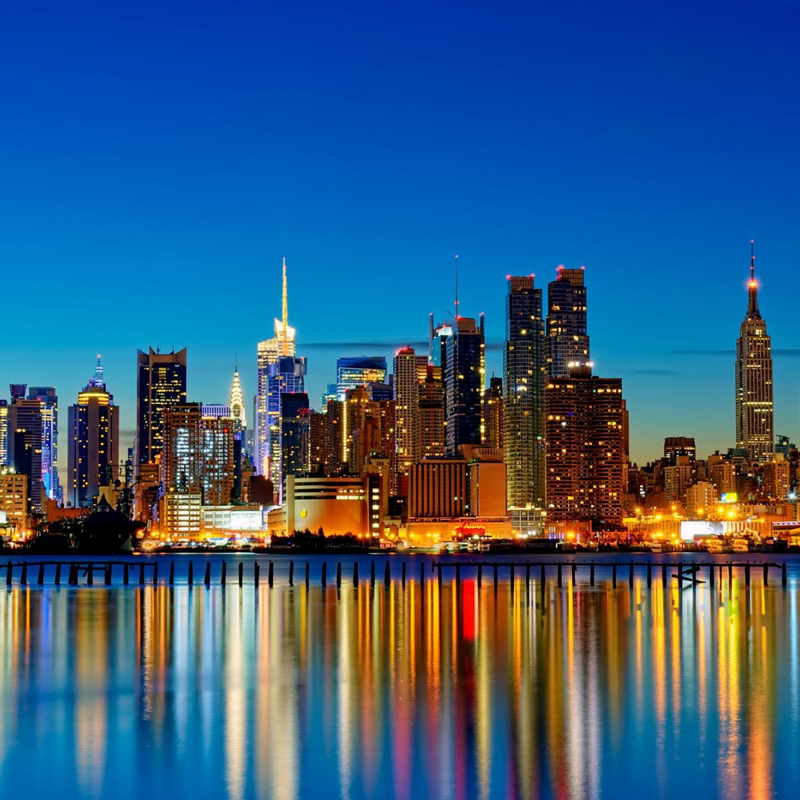
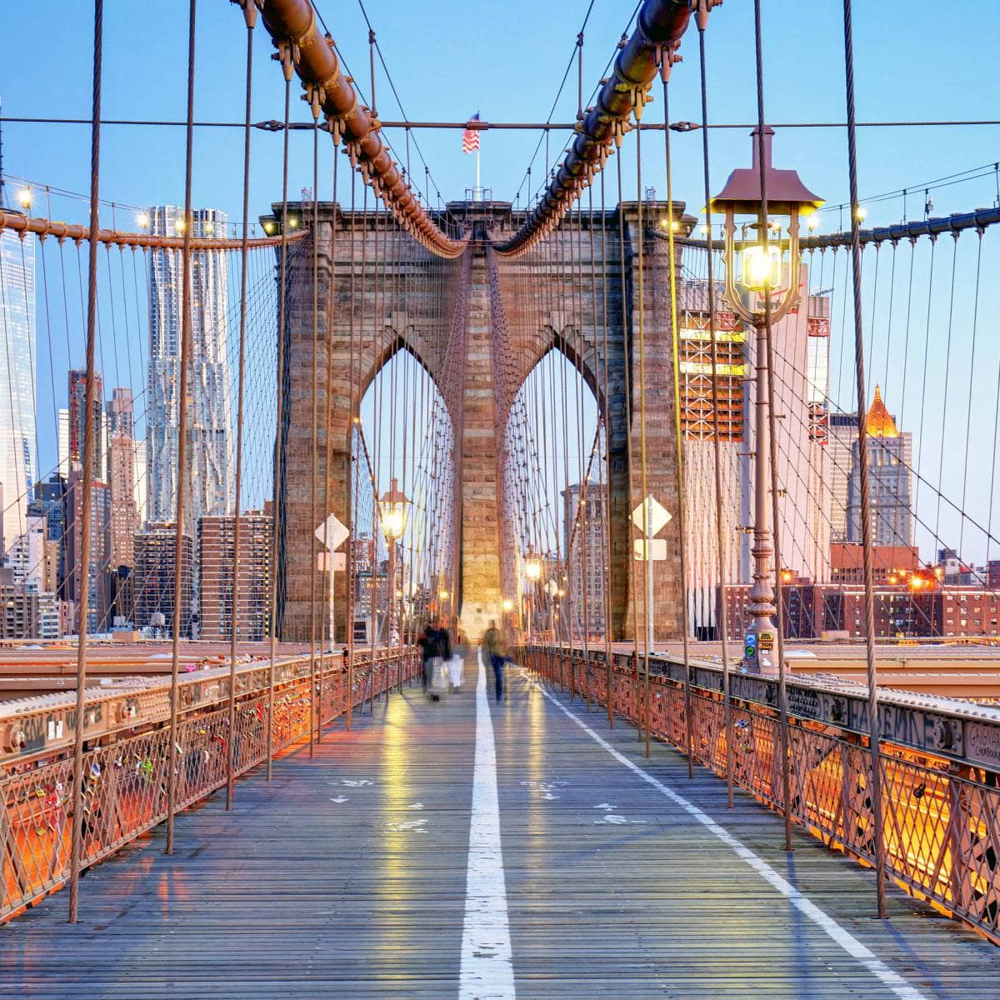
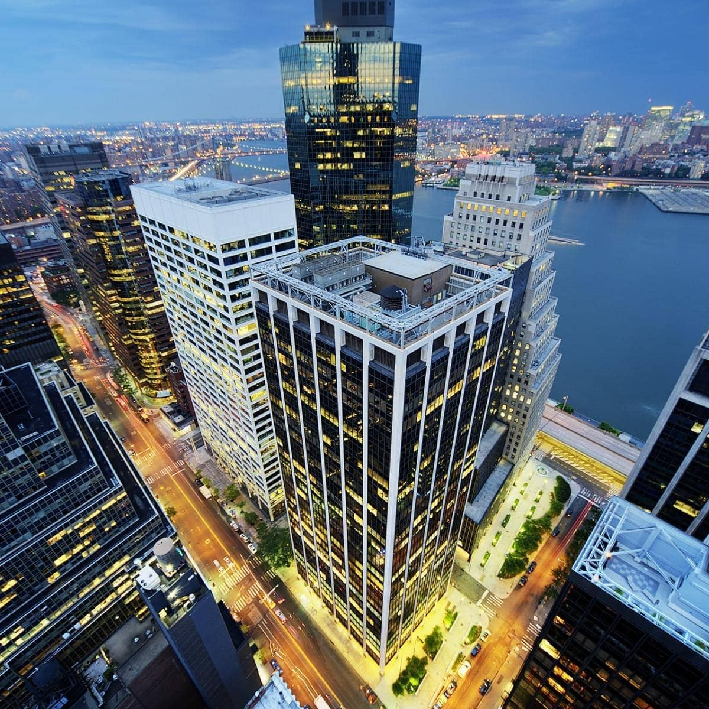
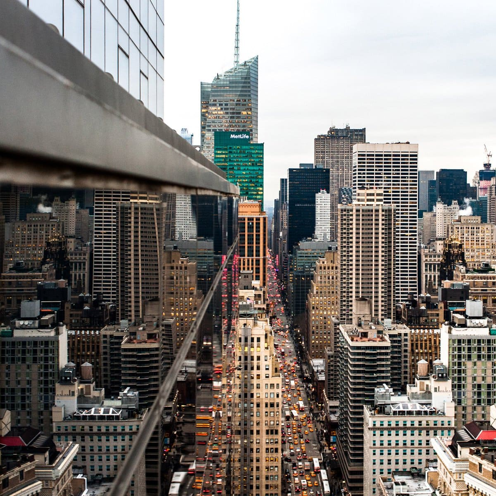
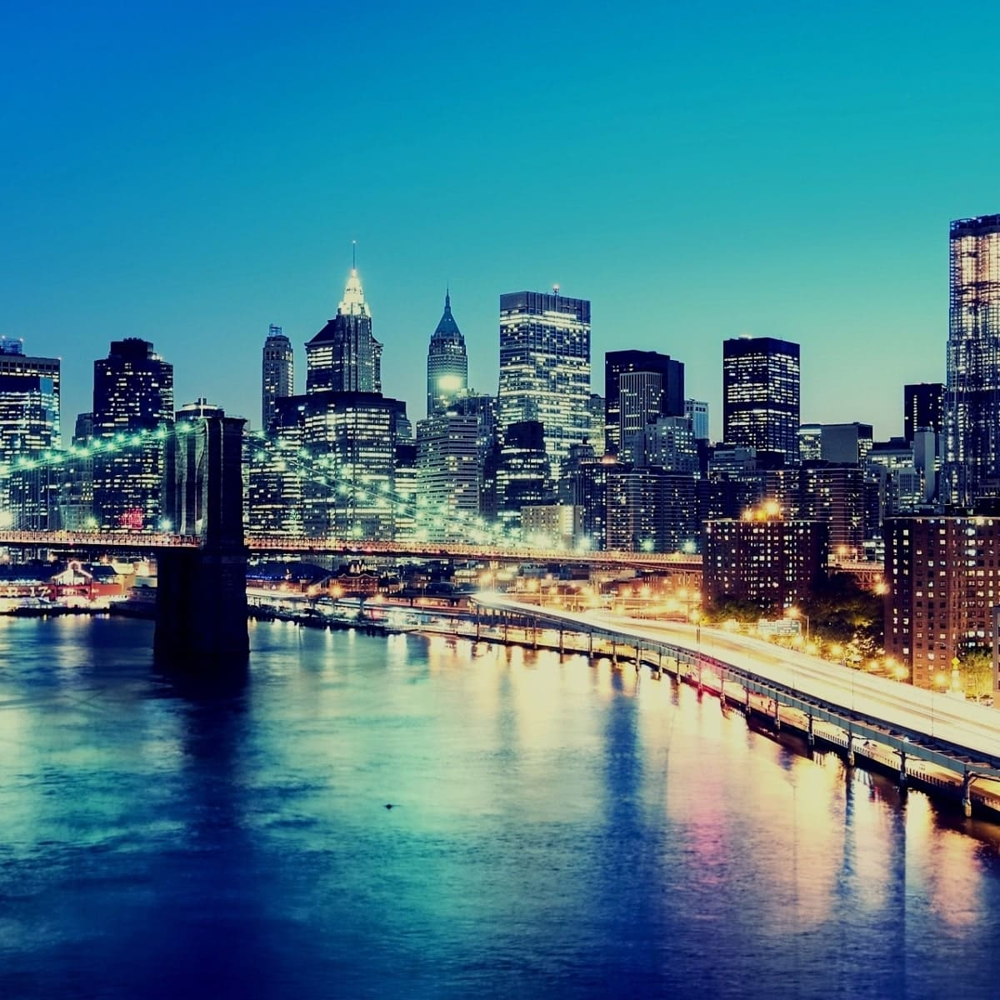

New York, often called New York City to distinguish it from New York State, or NYC for short, is the most populous city in the United States. With a 2020 population of 8,804,190 distributed over 302.6 square miles (784 km2), New York City is also the most densely populated major city in the United States.
Manhattan, known regionally as the City, is the most densely populated and geographically smallest of the five boroughs of New York City. It is the urban core of the New York metropolitan area, and coextensive with New York County, one of the original counties of the U.S. state of New York. Manhattan serves as the city's economic and administrative center, cultural identifier, and historical birthplace.
The Brooklyn Bridge is a hybrid cable-stayed/suspension bridge in New York City, spanning the East River between Manhattan Island and Brooklyn on Long Island. Opened on May 24, 1883, the Brooklyn Bridge was the first fixed crossing of the East River.
The Brooklyn Bridge is a hybrid cable-stayed/suspension bridge in New York City, spanning the East River between Manhattan Island and Brooklyn on Long Island. Opened on May 24, 1883, the Brooklyn Bridge was the first fixed crossing of the East River.
The Brooklyn Bridge is a hybrid cable-stayed/suspension bridge in New York City, spanning the East River between Manhattan Island and Brooklyn on Long Island. Opened on May 24, 1883, the Brooklyn Bridge was the first fixed crossing of the East River.